目次 > ゲームについて > 日本Falcom 攻略 > ZWEI II > ダンジョン一覧 > 軌道連絡駅 (LV.10)
らんの眼
ZWEI II (ツヴァイ 2、ZWEI II Plus)
| 概要 | 情報 | 攻略チャート |
| フード交換 | ペットについて | ボス戦 |
| 敵キャラ一覧 | ハンターランク | G-コロッセオ |
| アイテム一覧 | ガジェット一覧 | トレジャー一覧 |
| ダンジョン一覧 | クリアデータ特典 | Plusの追加要素 |
| ZWEI II攻略へ | 目次へ戻る |
| 第1 階層 |
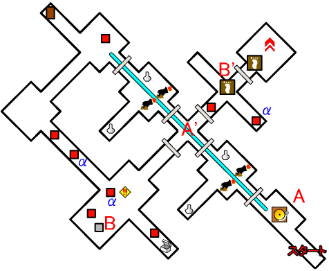
| 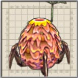 | αの印が付いている敵は「ころにー」です。 カサカサと近寄られてダメージを受けないように注意してください。 |
| 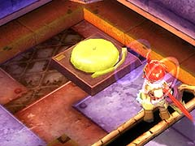 | A 地点のゴングを鳴らずと、リフトが動き出します。 この階層の扉のほとんどは、リフトと連動し開閉するので、リフトに乗りながら移動しなければなりません。 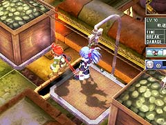 |
| 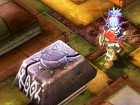 | B 地点のブロックを、B' 地点の足プレートの上に置くと、扉が開きます。 |
| 第2 階層 |
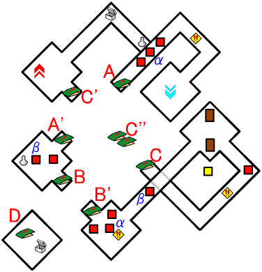
| αの印が付いている敵は「ころにー」です。 カサカサと近寄られてダメージを受けないように注意してください。 |
|
| 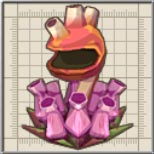 | βの印が付いている敵は「おおぐちぼや」です。 吸い寄せられて、ダメージを受けないように注意してください。 |
| 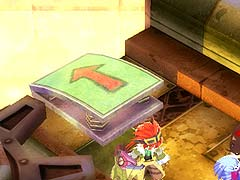 | A 地点のA' 地点はジャンプ台を使って行き来できます。 |
| B 地点のB' 地点はジャンプ台を使って行き来できます。 | |
| C 地点のC' 地点はジャンプ台を使って行き来できます。ただし、加速しすぎると中間地点のC'' 地点を飛び越えて下に落ちることがあるので、注意してください。 | |
| D 地点へは、B 地点やB' 地点のジャンプ台に乗らずに下に落ちることで移動できます。 また、D 地点のジャンプ台に乗ると、B 地点へ移動できます。 |
| 第3 階層 |
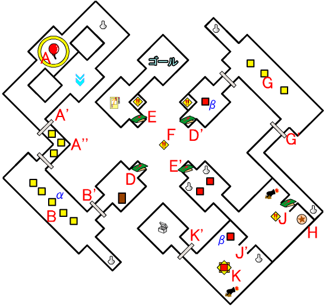
| αの印が付いている敵は「ころにー」です。 カサカサと近寄られてダメージを受けないように注意してください。 |
|
| βの印が付いている敵は「おおぐちぼや」です。 吸い寄せられて、ダメージを受けないように注意してください。 |
|
| 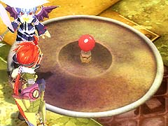 | A 地点の風船を割ると、A' 地点の扉が開き、A'' 地点に敵が現れます。 |
| B 地点へ移動すると、敵が出現します。 出現した敵を全て倒すとB' 地点の扉が開きます。 |
|
| D 地点からD' 地点への移動はジャンプ台を使います。ただし、F 地点にトラップ(コンロ?)が設置されているので、火が消えているときにトラップの上を通過できるようタイミングよくジャンプしなければいけません。 自信がない場合は「アンチトラップ」を装備するといいでしょう。 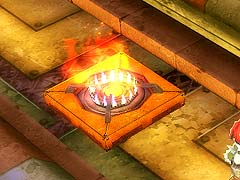 (トラップ) |
|
| 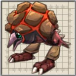 | G 地点へ移動すると、敵が出現します。 出現した敵を全て倒すとG' 地点の扉が開きます。 |
| 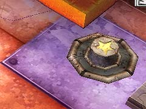 | H 地点のスイッチを押すと、J 地点にあるジャンプ台の上に足場ができます。 このスイッチは壁越しから「アンカーギア」で攻撃れば押せます。 |
| J 地点にあるジャンプ台に乗ると、J' 地点へ移動し、強制的に「ぐれーところにー」と戦うことになります。 通常のジャンプでは、ジャンプ台を飛び越えられないので、「ぐれーところにー」と戦いたくない場合は、H 地点のスイッチを押してください。 |
|
| 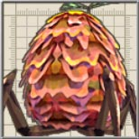 | K 地点へ移動すると、中ボスの「ぐれーところにー」が出現します。「ぐれーところにー」を倒すと、K' 地点の扉が開きます。 |
| E 地点からE' 地点への移動はジャンプ台を使います。ただし、F 地点にトラップ(コンロ?)が設置されているので、火が消えているときにトラップの上を通過できるようタイミングよくジャンプしなければいけません。 自信がない場合は「アンチトラップ」を装備するといいでしょう。 (トラップ) |
| 概要 | 情報 | 攻略チャート |
| フード交換 | ペットについて | ボス戦 |
| 敵キャラ一覧 | ハンターランク | G-コロッセオ |
| アイテム一覧 | ガジェット一覧 | トレジャー一覧 |
| ダンジョン一覧 | クリアデータ特典 | Plusの追加要素 |
| ページの上部へ | ZWEI II 攻略へ | 目次へ戻る |